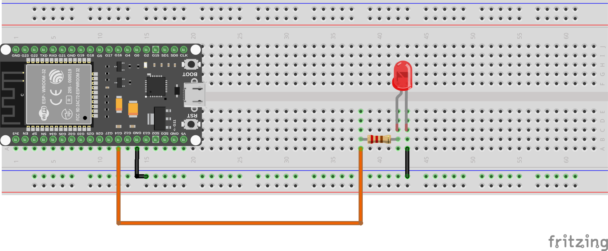

Comunicación HTTP
Uno de los usos más comunes de la conectividad en dispositivos IoT es la comunicación a través del protocolo HTTP (HyperText Transfer Protocol). Este protocolo permite a los dispositivos enviar y recibir datos a través de la web, interactuando con servidores y servicios en línea.
En esta sección, veremos por un lado, la posibilidad de realizar peticiones HTTP como cliente, y por otro lado, cómo configurar nuestro dispositivo para actuar como un servidor HTTP.
NOTA: Para todos estos ejemplos, es necesario tener una conexión a una red Wi-Fi activa. Asegúrate de haber configurado correctamente la conexión Wi-Fi antes de ejecutar los ejemplos de esta sección.
Cliente HTTP
Para realizar peticiones HTTP desde nuestro dispositivo, utilizamos la librería urequests, que proporciona una interfaz sencilla para enviar solicitudes HTTP. A continuación, se muestra un ejemplo de cómo realizar una solicitud GET a un servidor web:
Sin embargo, esta biblioteca no está incluida por defecto en todas las implementaciones de MicroPython, por lo que es posible que necesites descargarla e instalarla manualmente en tu dispositivo.
MicroPython tiene incluido un pequeño gestor de paquetes llamado upip, que permite instalar paquetes adicionales. Para instalar urequests, puedes utilizar el siguiente comando en la consola REPL de MicroPython:
import upip
upip.install('micropython-urequests')
Por lo que una vez hecho esto, ya podemos utilizar la librería urequests para realizar peticiones HTTP. Esta biblioteca es análoga a la popular biblioteca requests de Python, pero adaptada para funcionar en entornos con recursos limitados como MicroPython.
Vamos a ver un ejemplo de uso para la API de información meteorológica de OpenWeatherMap; la cual puedes encontrar información en:
https://openweathermap.org/api
Veammos cómo realizar una solicitud GET para obtener el clima actual de una ciudad específica:
import urequests
city='Almería'
api_key='TU_API_KEY'
response = urequests.get(f'http://api.openweathermap.org/data/2.5/weather?q={city}&appid={api_key}')
if response.status_code == 200:
data = response.json()
print("Clima en", city)
print("Temperatura:", data['main']['temp'])
print("Descripción:", data['weather'][0]['description'])
else:
print("Error al obtener los datos:", response.status_code)
response.close()
En este ejemplo, reemplaza 'TU_API_KEY' con tu clave de API de OpenWeatherMap. El código realiza una solicitud GET para obtener el clima actual de la ciudad especificada y luego imprime la temperatura y la descripción del clima en la consola.
Servidor HTTP
Además de actuar como cliente HTTP, nuestro dispositivo también puede funcionar como un servidor HTTP, permitiendo que otros dispositivos se conecten a él y soliciten información o controlen sus funciones. Para ello, utilizamos la librería socket para crear un servidor básico. Vamos a tratar de encender un led a través deun servidor HTTP simple.
Para ello necesitaremos los siguientes componentes:
- 1 LED
- 1 Resistencia de 220 ohmios
- Cables de conexión
- Protoboard
Realizando el montaje de la siguiente manera:

A continuación, se muestra un ejemplo de cómo configurar un servidor HTTP simple:
import socket
from machine import Pin
led = Pin(14, Pin.OUT) # Cambia el número del pin según tu conexión
addr = socket.getaddrinfo('0.0.0.0', 80)[0][-1]
s = socket.socket()
s.bind(addr)
s.listen(1)
print('Servidor HTTP escuchando en http://0.0.0.0:80')
while True:
cl, addr = s.accept()
print('Cliente conectado desde', addr)
request = cl.recv(1024)
request_str = request.decode('utf-8')
print('Solicitud HTTP:')
print(request_str)
# Control simple del LED a través de la URL
if '/led/on' in request_str:
led.value(1)
elif '/led/off' in request_str:
led.value(0)
response = """HTTP/1.1 200 OK
Content-Type: text/html
<!DOCTYPE html>
<html>
<head><title>Servidor HTTP en MicroPython</title></head>
<body>
<h1>Servidor HTTP en MicroPython</h1>
<p>LED está {}</p>
<a href="/led/on">Encender LED</a><br>
<a href="/led/off">Apagar LED</a>
</body>
</html>
""".format('ENCENDIDO' if led.value() else 'APAGADO')
cl.send(response)
cl.close()
En este ejemplo, el servidor HTTP escucha en el puerto 80 y responde a las solicitudes entrantes. Además, permite controlar un LED conectado al pin especificado mediante las rutas /led/on y /led/off. Cuando un cliente accede a estas rutas, el LED se enciende o apaga respectivamente, y la página web muestra el estado actual del LED.